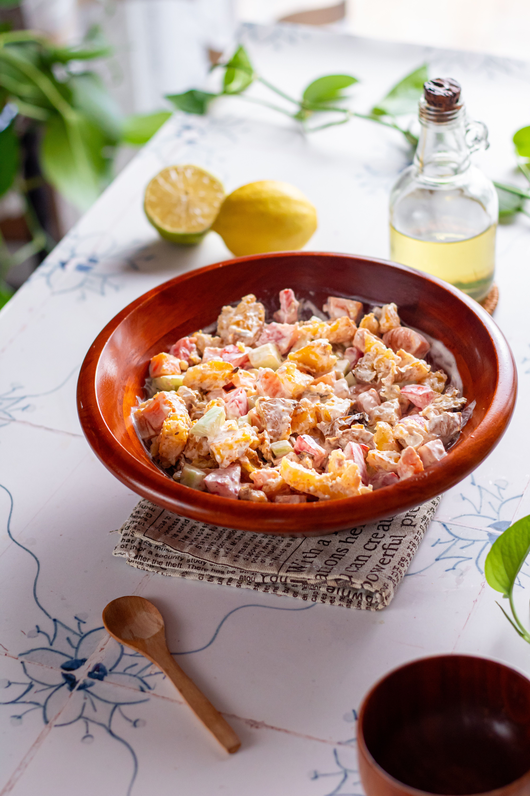

Description
Macaroni fruit salad is a popular Filipino dessert made with cooked macaroni, fruit cocktail, all-purpose cream, and condensed milk. It is sweet, creamy, and perfect for celebrations and family gatherings.
Ingredients
- 2 cups elbow macaroni
- 1 can fruit cocktail, drained
- 1 cup all-purpose cream
- 1/2 cup condensed milk
- 1/2 cup nata de coco, drained
- 1/2 cup shredded cheese (optional)
Instructions
- Cook the macaroni according to the package instructions.
- Drain the macaroni and let it cool.
- Drain the fruit cocktail and nata de coco.
- In a large bowl, combine the cream and condensed milk.
- Add the macaroni, fruit cocktail, and nata de coco.
- Mix all the ingredients until well combined.
- Refrigerate until cold before serving.
Recipe Information
| Preparation Time | Chilling Time | Servings |
|---|---|---|
| 20 minutes | 2 hours | 8 people |